KM analysis
Contents
KM analysis¶
K-means clustering theory¶
In this notebook, a weather typing clasification is performed using the commonly known K-Means algorithm. With this clustering technique we are able to group the sea-level-pressure data into different related groups, and then associate a storm-surge situation to each of them… All the python code is hosted at sscode/kma.py, where we use the scikit-learn package available here.
Regarding the maths… a description of the algorithm can be found at wikipedia!! But lets briefly explain the algorithm here:
The KMA clustering technique divides the high-dimensional data space into a number of clusters, each one defined by a prototype and formed by the data for which the prototype is the nearest. Given a database of n-dimensional vectors \(X = {x_1, x_2, ..., x_N}\), where \(N\) is the total amount of data and \(n\) is the dimension of each data \(x_k = {x_{1k}, ..., x_{nk}}\), KMA is applied to obtain M groups defined by a prototype or centroid \(v_k = {v_{1k}, ..., v_{nk}}\) of the same dimension of the original data, being \(k = 1, ..., M\). The classification procedure starts with a random initialization of the centroids \({v_1^0, v_2^0, ..., v_M^0}\). On each iteration \(r\), the nearest data to each centroid are identified and the centroid is redefined as the mean of the corresponding data. For example, on the \((r + 1)\) step, each data vector \(x_i\) is assigned to the jth group, where \(j = min{||x_i - v_j^r||, j = 1, ..., M}\), where \(||\) defines the Euclidean distance and \(v_j^r\) are the centroids on the \(r\) step. The centroid is updated as:
where \(n_j\) is the number of elements in the jth group and \(C_j\) is the subset of data included in group \(j\). The KMA iteratively moves the centroids minimizing the overall within-cluster distance until it converges and data belonging to every group are stabilized.
{kind=link}
Performance of the k-means algorithm over a random dataset. It is important to highlight that the kma technique is just able to linearly separate the data (image reference)¶
{kind=link}
# basics
import os, sys
import numpy as np
import pandas as pd
import xarray as xr
# plotting
import matplotlib.pyplot as plt
import cartopy.crs as ccrs
import plotly.express as px
# append sscode to path
sys.path.insert(0, '/Users/administrador/Documents/geocean-nz-ss')
data_path = '/Volumes/ToshibaJT/geocean-nz-ss/data'
os.environ["SSURGE_DATA_PATH"] = data_path
# custom
from sscode.data import Loader, load_moana_hindcast_ss, load_dac_hindcast, \
join_load_uhslc_tgs, load_moana_hindcast
from sscode.kma import KMA_simple
from sscode.config import default_region_reduced, default_region
from sscode.plotting.config import _figsize
from sscode.plotting.utils import plot_ccrs_nz, custom_cmap, colors_dwt
from sscode.plotting.pca import plot_pcs
# warnings
import warnings
warnings.filterwarnings('ignore')
DATA PATH /Volumes/ToshibaJT/geocean-nz-ss/data
Load and plot some data + PCs¶
As always, we load the data, both the storm surge and the PCs (regional PCs in this case), and then plot whatever we want to!!
# load the data from pre-saved files
load_cfsr_moana_uhslc = Loader(
load_predictor_files=(
True,[data_path+'/cfsr/CFSR_MSLP_daily.nc',data_path+'/cfsr/CFSR_WINDs_daily.nc']
), plot=(False,False,False)
)
ss_grid_sites = xr.open_dataset(
'../data/storm_surge_data/moana_hindcast_v2/ss_grid_300m_depth_daily.nc')
loading previously saved atmospheric data from ['/Volumes/ToshibaJT/geocean-nz-ss/data/cfsr/CFSR_MSLP_daily.nc', '/Volumes/ToshibaJT/geocean-nz-ss/data/cfsr/CFSR_WINDs_daily.nc']
loading the UHSLC tidal guages...
# load / calculate the regional pcs
pcs_cfsr = xr.open_dataset('../data/cfsr/default_region_reduced_None_winds_gradients_1D_tl3.nc')
plot_pcs(pcs_cfsr,n_plot=4,region=default_region_reduced,
pca_ttls=['SLP in t','Grads in t','Winds in t',
'SLP in t-1','Grads in t-1','Winds in t-1',
'SLP in t-2','Grads in t-2','Winds in t-2'])
ss_pcs = xr.open_dataset('../data/storm_surge_data/regional_ONE_shore_ss_pcs.nc')
fig, axes = plt.subplots(ncols=5,nrows=2,figsize=(16,7),
subplot_kw={'projection':ccrs.PlateCarree(central_longitude=180)})
for i,ax in enumerate(axes.flatten()):
pc_plot = (ss_pcs.EOFs/np.sqrt(ss_pcs.variance)).isel(n_components=i).values
th_value = max(abs(np.max(pc_plot)),abs(np.min(pc_plot)))
p = ax.scatter(ss_pcs.lon.values,ss_pcs.lat.values,
c=pc_plot,vmin=-th_value,vmax=+th_value,
cmap='seismic',s=1,transform=ccrs.PlateCarree())
expl_var = np.cumsum(ss_pcs.variance.values)/np.sum(ss_pcs.variance.values)*100
var_ttl = str(expl_var[i])[:3] if i==0 else str(expl_var[i]-expl_var[i-1])[:4]
ax.set_title(f'PC{i+1}: variance={var_ttl}%')
for ax in axes.flat:
ax.coastlines()
plotting 4 components with 9 EOFs + PC...
being the EOFs the slp, the gradient, in steps t, t-1


 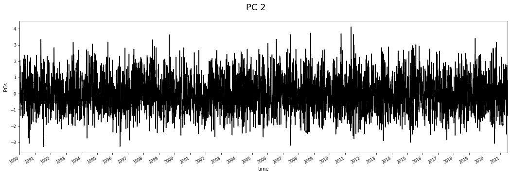
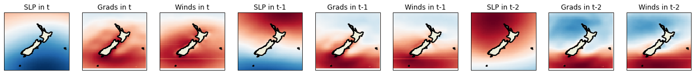
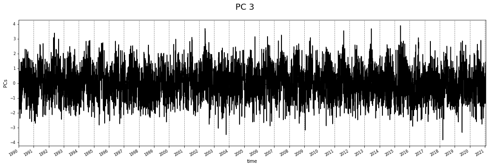
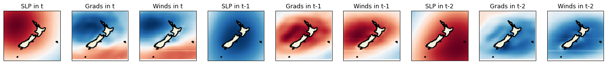
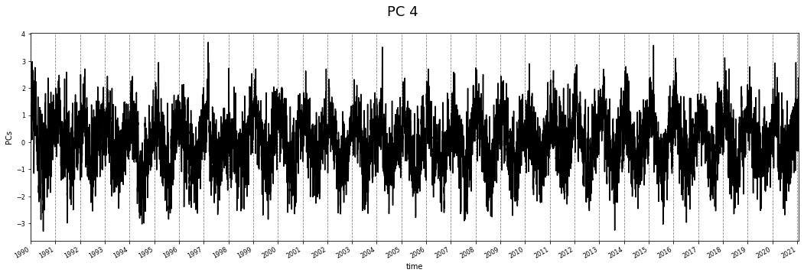
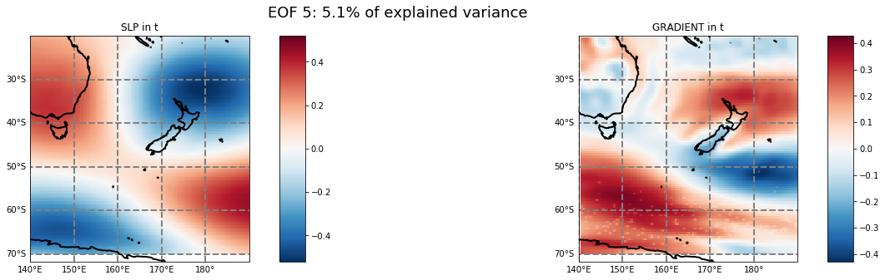
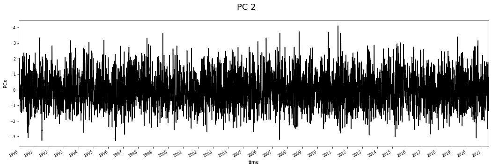
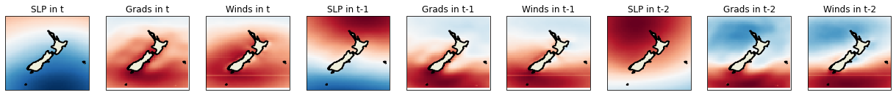
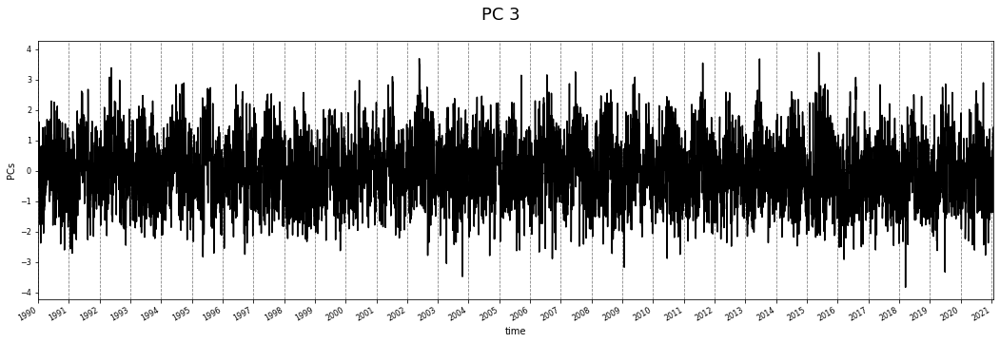
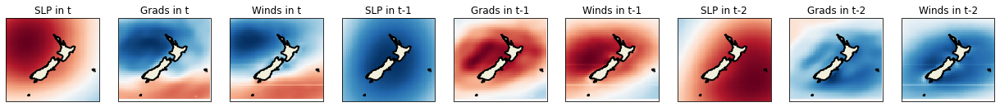
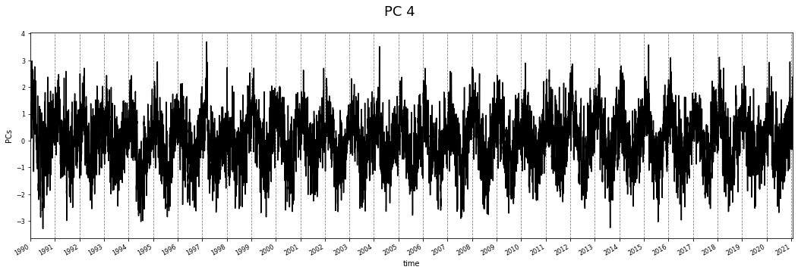
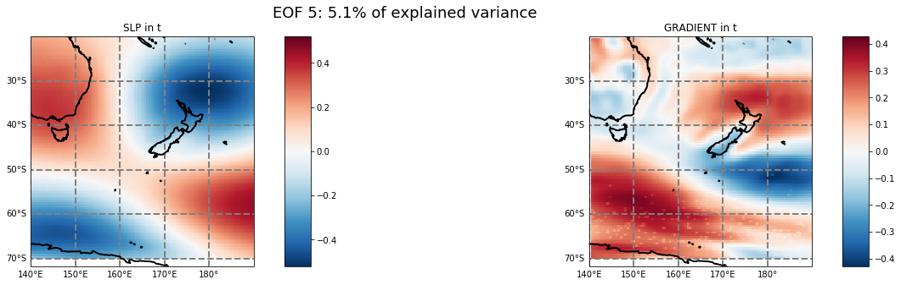
np.cumsum(pcs_cfsr.variance.values)/pcs_cfsr.total_variance.values
array([0.1277436 , 0.21200389, 0.27855168, 0.33437853, 0.37521705,
0.4140625 , 0.44427278, 0.47094393, 0.49618042, 0.52036663,
0.54178857, 0.5608859 , 0.57968865, 0.59547352, 0.61093356,
0.62593095, 0.64039856, 0.6531998 , 0.66302639, 0.67257951,
0.68192261, 0.69105795, 0.69954512, 0.70793998, 0.71625091,
0.72373863, 0.73063423, 0.73738825, 0.74400999, 0.7500547 ,
0.75599721, 0.76157163, 0.76686782, 0.77187861, 0.77686754,
0.78152769, 0.78597601, 0.79012685, 0.79417365, 0.7981854 ,
0.80180548, 0.80523538, 0.80861239, 0.81184249, 0.81500151,
0.81809421, 0.82110186, 0.82402104, 0.82690812, 0.82978341,
0.83238343, 0.834904 , 0.8373989 , 0.83984254, 0.84214314,
0.84441047, 0.84646087, 0.84848142, 0.85045345, 0.85237743,
0.85429617, 0.85620176, 0.85807472, 0.85991234, 0.86166707,
0.86335231, 0.86500145, 0.86662001, 0.86823112, 0.86979351,
0.87128933, 0.87277933, 0.87423997, 0.87569785, 0.87715337,
0.87858886, 0.87998605, 0.88137552, 0.88272247, 0.88402909,
0.8853059 , 0.88656924, 0.88782281, 0.88905903, 0.89027525,
0.89147884, 0.89266583, 0.89382591, 0.89491713, 0.895994 ,
0.89706318, 0.89811742, 0.89911887, 0.90010525, 0.90109013,
0.90206012, 0.90301694, 0.90395443, 0.90488431, 0.90580115,
0.90669653, 0.90754813, 0.90839548, 0.90921579, 0.91002235,
0.91082226, 0.91161626, 0.91239676, 0.91316573, 0.91393005,
0.9146857 , 0.9154345 , 0.91617455, 0.91691152, 0.91764442,
0.91836888, 0.91907985, 0.91978224, 0.9204822 , 0.92117943,
0.9218523 , 0.92252068, 0.92318367, 0.92380727, 0.92442097,
0.92503015, 0.92561597, 0.92619716, 0.92677336, 0.92732957,
0.92787574, 0.92841591, 0.92894832, 0.92946627, 0.92997695,
0.93048606, 0.93099344, 0.93149629, 0.93199277, 0.93247679,
0.93295908, 0.93343906, 0.93391425, 0.93438562, 0.93485298,
0.93531775, 0.93577543, 0.93622845, 0.93667888, 0.9371211 ,
0.93756129, 0.93799871, 0.93842737, 0.93884917, 0.93926805,
0.93968267, 0.94009657, 0.940505 , 0.9409027 , 0.94129368,
0.94168323, 0.94206946, 0.94245166, 0.94283291, 0.94321178,
0.94358591, 0.94395756, 0.94432377, 0.94468847, 0.9450491 ,
0.94540674, 0.94576082, 0.94611183, 0.94645839, 0.94680364,
0.94714139, 0.94747519, 0.94780694, 0.94813579, 0.94846066,
0.94878367, 0.94910153, 0.94941832, 0.94973251, 0.95004114,
0.95034931, 0.95065616, 0.95095347, 0.95124868, 0.95154204,
0.95183028, 0.95211711, 0.95240227, 0.95268197, 0.95296129,
0.95323918, 0.95351188, 0.9537816 , 0.95404787, 0.95431172,
0.95457322, 0.95483225, 0.9550896 , 0.95534475, 0.95559678,
0.95584595, 0.95609474, 0.95634217, 0.95658412, 0.95682509,
0.95706233, 0.9572972 , 0.95753143, 0.95776363, 0.957992 ,
0.95821954, 0.95844425, 0.95866737, 0.95888773, 0.95910578,
0.95932296, 0.95953772, 0.95975104, 0.95996251, 0.96017331,
0.96038173, 0.96058909, 0.96079536, 0.96099848, 0.96119978,
0.96139866, 0.96159561, 0.96179112, 0.96198479, 0.96217667,
0.9623661 , 0.96255506, 0.96274048, 0.96292457, 0.96310788,
0.96329001, 0.96347118, 0.96365099, 0.9638295 , 0.96400739,
0.9641839 , 0.96435995, 0.96453445, 0.96470806, 0.96488095,
0.9650532 , 0.96522278, 0.96539081, 0.96555772, 0.96572395,
0.9658892 , 0.96605433, 0.96621728, 0.96637939, 0.96653986,
0.96669948, 0.96685839, 0.96701608, 0.96717297, 0.96732782,
0.9674816 , 0.96763459, 0.96778673, 0.96793751, 0.96808796,
0.9682369 , 0.96838434, 0.96853129, 0.96867673, 0.96882199,
0.96896647, 0.96910952, 0.969251 , 0.96939196, 0.96953173,
0.96967131, 0.96981009, 0.96994742, 0.97008434, 0.97021993,
0.97035425, 0.9704875 , 0.97061937, 0.97075078, 0.97088063,
0.97100977, 0.97113862, 0.97126653, 0.97139405, 0.97152018,
0.97164599, 0.97177148, 0.97189623, 0.97201882, 0.97214119,
0.97226257, 0.97238289, 0.97250294, 0.97262195, 0.97273967,
0.97285711, 0.97297405, 0.97309082, 0.9732064 , 0.97332115,
0.9734356 , 0.97354945, 0.97366195, 0.97377439, 0.97388603,
0.97399672, 0.97410706, 0.97421699, 0.97432616, 0.97443404,
0.97454175, 0.9746487 , 0.97475532, 0.97486102, 0.97496636,
0.97507114, 0.97517563, 0.97527925, 0.97538244, 0.97548441,
0.97558616, 0.97568695, 0.97578702, 0.97588682, 0.9759859 ,
0.97608435, 0.97618274, 0.9762805 , 0.97637731, 0.97647359,
0.97656907, 0.97666371, 0.97675769, 0.97685139, 0.976944 ,
0.97703641, 0.97712775, 0.97721869, 0.97730939, 0.97739976,
0.97748856, 0.97757721, 0.97766549, 0.97775297, 0.97784022,
0.97792648, 0.97801249, 0.97809816, 0.97818266, 0.97826695,
0.97835072, 0.97843398, 0.9785171 , 0.97859959, 0.97868154,
0.97876303, 0.97884379, 0.9789244 , 0.9790046 , 0.97908448,
0.97916356, 0.97924232, 0.97932102, 0.97939913, 0.97947686,
0.97955379, 0.9796301 , 0.97970635, 0.97978206, 0.97985737,
0.97993246, 0.98000728, 0.98008163, 0.98015573, 0.98022945,
0.98030202, 0.98037423, 0.98044609, 0.98051783, 0.98058894,
0.98065983, 0.98073003, 0.98080003, 0.9808699 , 0.98093952,
0.98100837, 0.98107672, 0.98114468, 0.98121191, 0.98127899,
0.98134562, 0.98141195, 0.98147801, 0.98154356, 0.98160889,
0.9816742 , 0.9817392 , 0.9818037 , 0.98186772, 0.98193099,
0.98199416, 0.98205731, 0.98211983, 0.98218213, 0.9822442 ,
0.9823059 , 0.98236742, 0.98242815, 0.98248855, 0.98254886,
0.98260879, 0.98266867, 0.98272815, 0.98278721, 0.982846 ,
0.98290428, 0.98296242, 0.98302016, 0.98307741, 0.9831345 ,
0.98319139, 0.98324796, 0.98330425, 0.98336025, 0.98341613,
0.98347165, 0.983527 , 0.98358211, 0.98363689, 0.98369157,
0.98374601, 0.9838003 , 0.98385444, 0.98390792, 0.98396126,
0.98401423, 0.98406692, 0.9841195 , 0.98417177, 0.9842239 ,
0.9842758 , 0.98432746, 0.98437895, 0.98443009, 0.98448114,
0.9845319 , 0.98458245, 0.9846325 , 0.98468249, 0.98473231,
0.98478201, 0.98483142, 0.98488053, 0.98492954, 0.98497841,
0.98502722, 0.98507573, 0.98512404, 0.98517221, 0.98522019,
0.98526803, 0.98531568, 0.98536317, 0.98541044, 0.98545758,
0.98550447, 0.98555097, 0.98559728, 0.98564341, 0.98568936,
0.98573504, 0.9857806 , 0.98582596, 0.98587109, 0.9859161 ,
0.98596085, 0.98600549, 0.98604997, 0.9860942 , 0.98613806,
0.98618184, 0.98622535, 0.98626869, 0.98631188, 0.98635463,
0.98639711, 0.98643949, 0.98648175, 0.98652393, 0.98656582,
0.9866076 , 0.98664911, 0.98669053, 0.98673186, 0.98677296,
0.98681399, 0.98685468, 0.98689522, 0.98693551, 0.98697578,
0.98701594, 0.9870559 , 0.98709564, 0.98713531, 0.98717454,
0.98721367, 0.98725273, 0.98729155, 0.98733022, 0.9873688 ,
0.98740714, 0.98744544, 0.98748347, 0.98752136, 0.98755907,
0.98759676, 0.98763432, 0.98767176, 0.98770893, 0.98774603,
0.98778295, 0.98781964, 0.98785627, 0.98789284, 0.98792904,
0.98796517, 0.98800122, 0.98803718, 0.98807301, 0.98810869,
0.98814422, 0.98817971, 0.98821492, 0.98825002, 0.98828493,
0.9883197 , 0.98835437, 0.98838887, 0.98842333, 0.98845762,
0.9884917 , 0.98852571, 0.98855959, 0.9885934 , 0.98862698,
0.98866044, 0.98869378, 0.98872707, 0.98876006, 0.98879302,
0.98882586, 0.9888586 , 0.98889121, 0.98892372, 0.98895606,
0.98898831, 0.98902048, 0.98905252, 0.98908444, 0.9891163 ,
0.98914807, 0.98917966, 0.98921109, 0.9892425 , 0.98927376,
0.98930482, 0.98933569, 0.98936653, 0.98939727, 0.98942799,
0.98945854, 0.98948896, 0.98951921, 0.98954936, 0.98957937,
0.98960925, 0.98963902, 0.98966875, 0.98969841, 0.98972804,
0.98975747, 0.98978663, 0.98981573, 0.98984477, 0.9898737 ,
0.98990249, 0.98993112, 0.9899597 , 0.98998811, 0.99001619,
0.99004426])
Plot mean SLP and SS circumstances¶
As we are trying to represent all the different climate situations, we will now plot how the mean SLP and SS circumstances might look like in the area around New Zealand.
Calculate the weather types¶
add extra info regarding weather types!!
# lets calculate the weather types
run = True
if run:
kms_data = KMA_simple(
load_cfsr_moana_uhslc.predictor_slp.SLP.sel(
longitude=slice(default_region_reduced[0],default_region_reduced[1]),
latitude=slice(default_region_reduced[2],default_region_reduced[3])
), load_moana_hindcast_ss(daily=True), ss_grid_sites,
pcs_cfsr, ss_pcs, plot=True,
n_clusters=100, calculate_gev_stats=False
)
loading the Moana v2 hindcast data (ss)...
 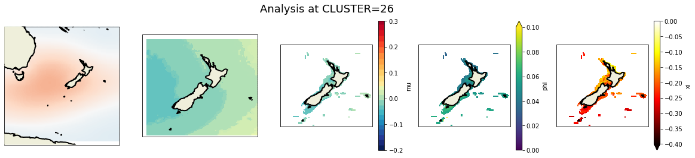
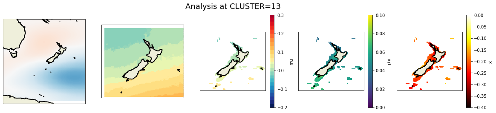
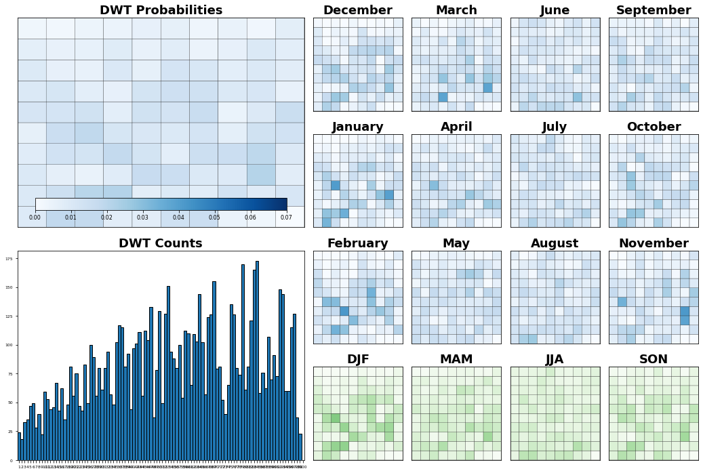
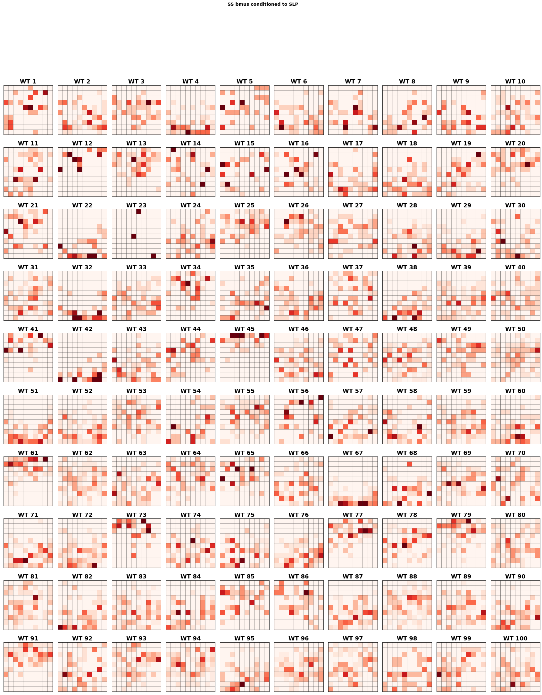
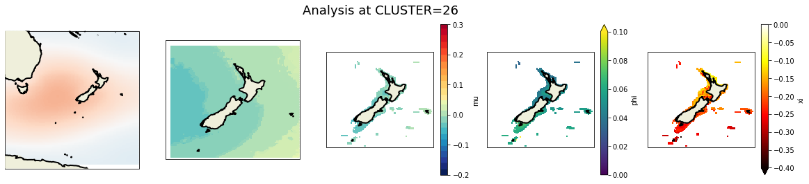
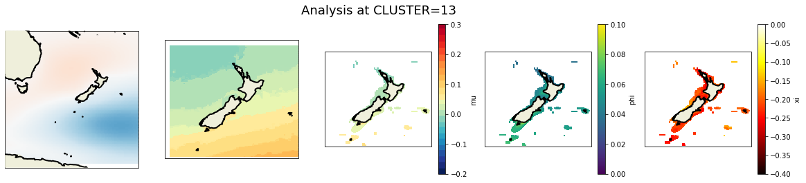
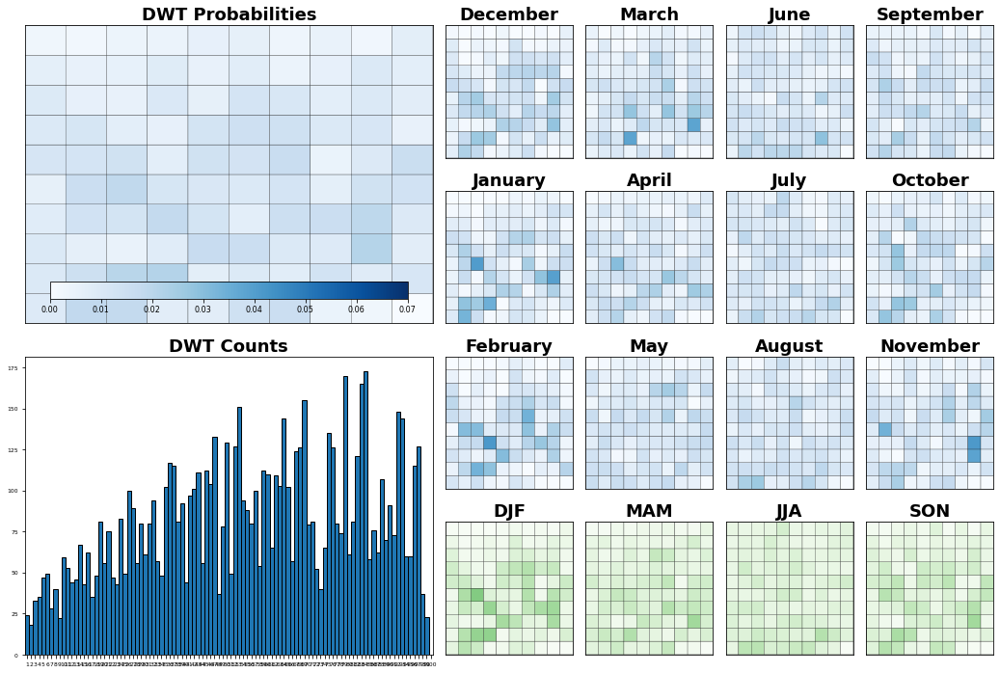
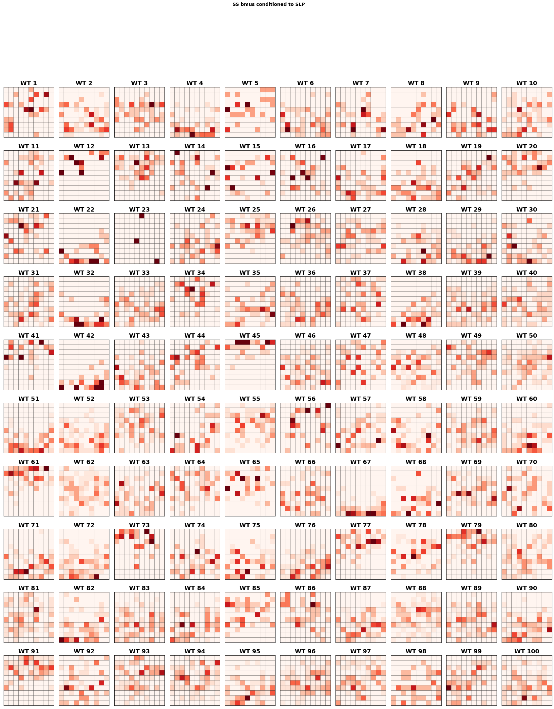
p = kms_data[1].plot.scatter(
x='lon',y='lat',hue='ss',col='n_clusters',col_wrap=10,cmap='seismic',
subplot_kws={'projection':ccrs.PlateCarree(central_longitude=180)},
transform=ccrs.PlateCarree(),figsize=(25,20))
for i,ax in enumerate(p.axes.flat):
ax.coastlines()
ax.set_extent(default_region_reduced)
ax.set_title(f'Cluster -- {i+1}')
GEV analysis (by cluster)¶
For each cluster, we took the daily maxima and perform a GEV analysis, which code can be found here.
To refresh our memories, this probability density function is usually used to statistically represent the distribution of extreme events (in this case, daily maxima), where the equation can take the following aspects:
where \((a)_+ = max(0,a)\) and \(\mu\) , \(\psi\) y \(\xi\) are the parameters of the GEV distribution. This parameters are estimated using the maximum likelihood estimation, which consists in finding the optimal parameters that maximizes the logarithm of the likelihood for the data:
more information can be found here!!
from sscode.plotting.kma import plot_cluster_wgev
plot_cluster_wgev(kms_data[0],kms_data[1],[1,31])
---------------------------------------------------------------------------
AttributeError Traceback (most recent call last)
Input In [7], in <module>
1 from sscode.plotting.kma import plot_cluster_wgev
----> 2 plot_cluster_wgev(kms_data[0],kms_data[1],[1,31])
File ~/Documents/geocean-nz-ss/sscode/plotting/kma.py:509, in plot_cluster_wgev(kma_data, gev_data, clusters)
498 ((kma_data.slp_clusters.sel(n_clusters=cluster) - \
499 kma_data.slp_clusters.mean(dim='n_clusters')) / 100.0).plot(
500 cmap='RdBu_r',vmin=-30,vmax=30,
501 ax=axes[0],transform=ccrs.PlateCarree(),
502 add_colorbar=False
503 )
504 kma_data.ss_clusters_mean.sel(n_clusters=cluster).plot(
505 cmap=custom_cmap(15,'YlOrRd',0.15,0.9,'YlGnBu_r',0,0.85),
506 vmin=-0.2,vmax=0.3,add_colorbar=False,
507 ax=axes[1],transform=ccrs.PlateCarree(),
508 )
--> 509 gev_data.mu.sel(n_clusters=cluster).plot(
510 cmap=custom_cmap(15,'YlOrRd',0.15,0.9,'YlGnBu_r',0,0.85),
511 x='lon',y='lat',transform=ccrs.PlateCarree(),
512 vmin=-0.2,vmax=0.3,add_colorbar=True,ax=axes[2]
513 )
514 gev_data.phi.sel(n_clusters=cluster).plot(
515 cmap='viridis', # custom_cmap(15,'viridis',0.15,0.9,'plasma',0,0.85),
516 x='lon',y='lat',transform=ccrs.PlateCarree(),
517 vmin=0.0,vmax=0.1,add_colorbar=True,ax=axes[3]
518 )
519 gev_data.xi.sel(n_clusters=cluster).plot(
520 cmap='hot', # custom_cmap(15,'jet',0.15,0.9,'hot',0,0.85),
521 x='lon',y='lat',transform=ccrs.PlateCarree(),
522 vmin=-0.4,vmax=0.0,add_colorbar=True,ax=axes[4]
523 )
File /opt/miniconda3/envs/ssnz/lib/python3.8/site-packages/xarray/core/common.py:239, in AttrAccessMixin.__getattr__(self, name)
237 with suppress(KeyError):
238 return source[name]
--> 239 raise AttributeError(
240 f"{type(self).__name__!r} object has no attribute {name!r}"
241 )
AttributeError: 'Dataset' object has no attribute 'mu'
Tip
Images generated by code, as the one above, can be easily open in a new window, as they have all been generated with good quality for this particular purpose!!
Extras..¶
Calculate prediction errors (not the goal)¶
# check predictions with the kmeans_algo==weather_types
p = np.abs(load_moana_hindcast_ss(daily=True).sel(time=kms_data[0].test_time) - \
kms_data[0].ss_clusters_mean.sel(n_clusters=kms_data[0].bmus_pred.values).values)\
.groupby('time.season').mean().plot(
col='season',vmin=0.0,vmax=0.1,cmap='jet',figsize=(20,4),
subplot_kws={'projection':ccrs.PlateCarree(central_longitude=180)},
transform=ccrs.PlateCarree()
)
plot_ccrs_nz(p.axes.flatten(),plot_labels=(False,None,None))
Perform analysis in south-west coast¶
here goes extra info for the GEV… deleted… saved locally…